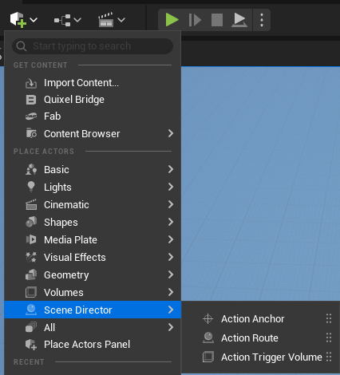

World Helpers
These actors are simple world helpers.
They do not add story logic by themselves. They just make scenes easier to set up, easier to read, and easier to reuse.
How to add them to the level
You can add these helpers through the standard Place Actors menu in Unreal Editor.

ActionAnchor
ActionAnchor is a helper point in the level.
Use it when you want to say things like:
- go here
- stand here
- look at this point
- interact at this spot
In practice, it is the simplest way to mark an exact place in the world for a character or player.
Each anchor has an Anchor Tag. Movement and rotation nodes reference anchors by this tag (or by selecting the anchor actor directly in the node).
ActionRoute
ActionRoute is a helper path in the level.
Use it when one point is not enough and a character should move through a small sequence of positions instead of jumping straight to one target.
In practice, it is a convenient way to describe movement like:
- patrol here
- walk around this area
- approach the scene along this path
- leave the scene along this path
Scene Director movement nodes can target a whole route or a single point on it:
Move Along Route— walk the full spline path.Move To Route Point— go to one spline point; index-1means the last point.Rotate To Route Point— turn to face one spline point.
ActionTriggerVolume
ActionTriggerVolume is a helper zone in the level.
Use it when a scene should begin because someone entered an area.
In practice, it answers the question:
- when should this Scene Director start?
So instead of starting a scene manually, you can place a volume in the world and let the scene begin when a pawn overlaps it.
Settings
Scene Directors To Run— one or more Action Graph classes to start on trigger. All listed graphs are launched in order.One Shot— when enabled, the volume triggers only once, then destroys itself.Only Player Pawn(defaulttrue) — ignore non-player pawns. Setfalseto react to any pawn overlap.
Runtime behavior
- On
Begin Play, the volume also checks pawns already inside the volume and triggers if needed. - Graphs are started through
Run Scene Directorwith no input parameters. - For parameterized or single-actor graphs, prefer starting from Blueprint/C++ instead of the volume, or use a small wrapper graph.
Related task nodes
Nodes that pair well with these world references:
Movement
Move To Anchor— pathfind to anActionAnchor.Move To Route Point— go to one point on anActionRoute. Good for patrol beats, guided approach paths, or staged exits.Move Along Route— follow the full route spline.Teleport To Anchor— instant move to an anchor.Teleport To Nearest NavMesh— move to the nearest reachable navmesh position around the current location. Good as an unstuck or recovery action.
Rotation
Rotate To AnchorRotate To Route PointRotate To PlayerRotate Player To Anchor
Audio at anchors
Play Sound At Anchor— spawn/play audio at an anchor location.Stop Sound— stop a previously played sound instance.
For follow behavior toward a moving target, see Follow Player / Follow Actor in Action Graph Toolkit — Flow nodes.
See also
- Basic Usage — Start a graph
- Runtime Control — stop graphs started by triggers or scripts